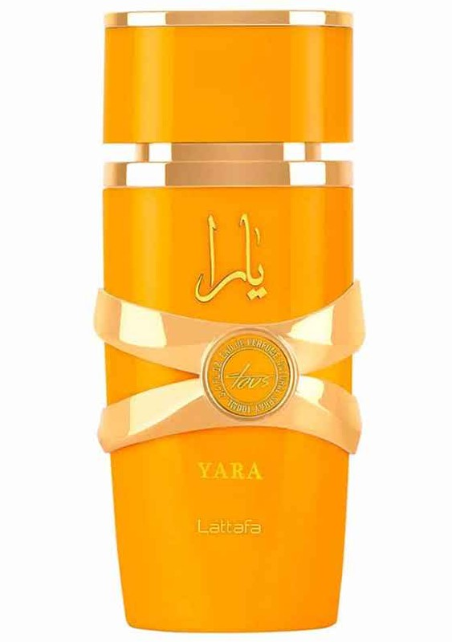
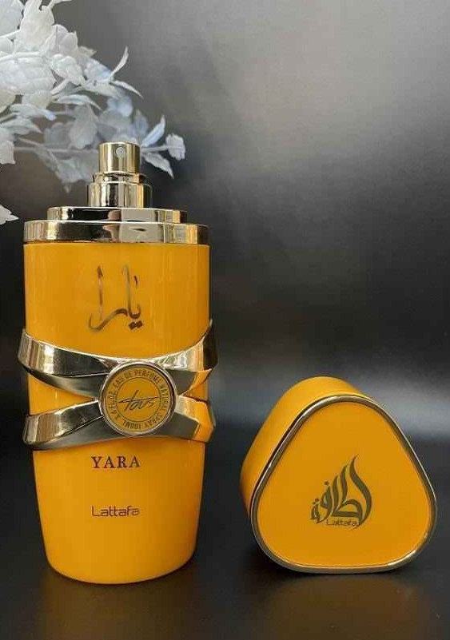

Descripción
Yara Tous, este encantador perfume se abre con una cautivadora mezcla de Amber, emanando un aura rica y acogedora. El aroma te envuelve como un abrazo lujoso, llama la atención al instante con su carácter profundo y fascinante.
Notas de salida: coco, mango y maracuyá.
Notas de corazón: jazmín, heliotropo y azahar.
Notas de fondo: cachemira, vainilla y almizcle.